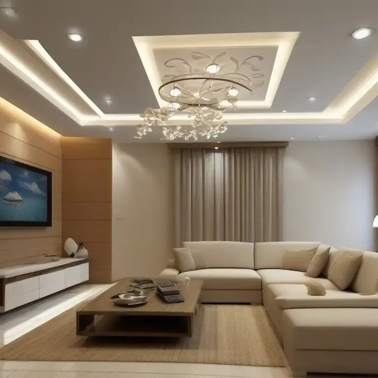
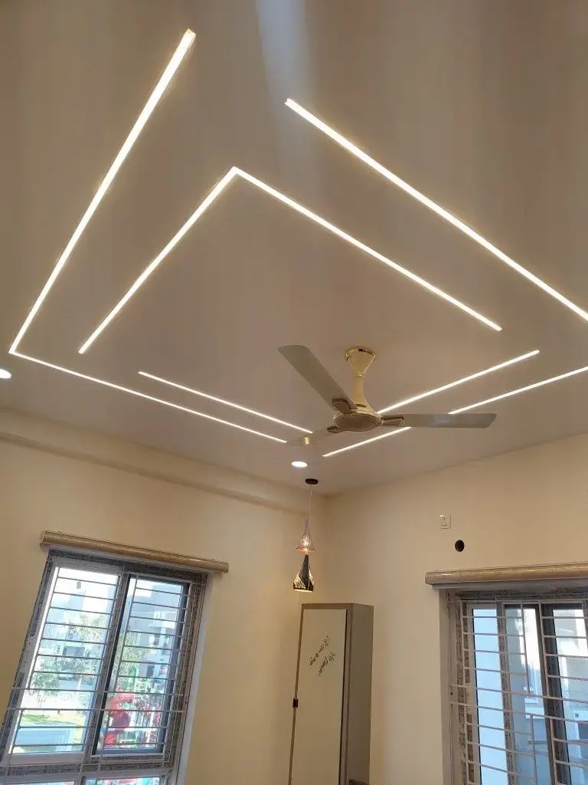
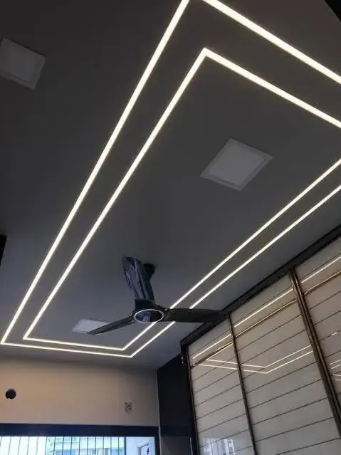
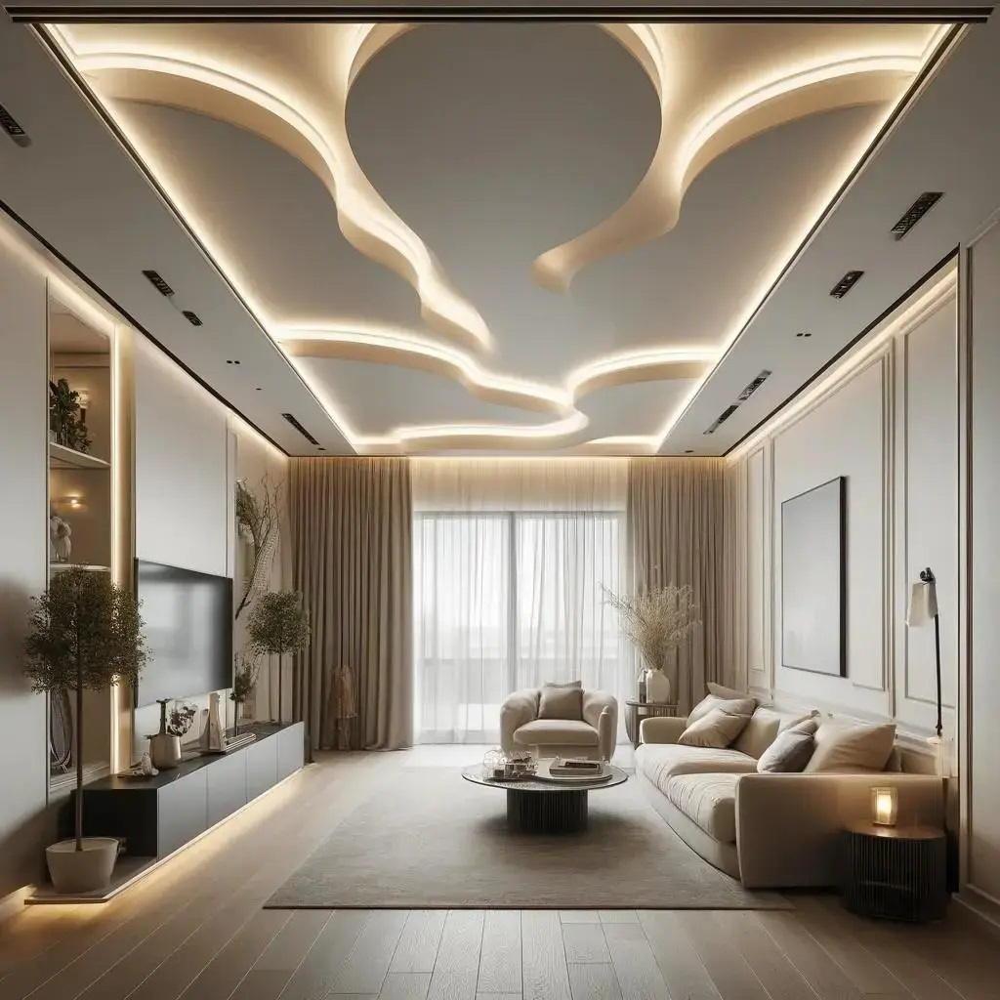
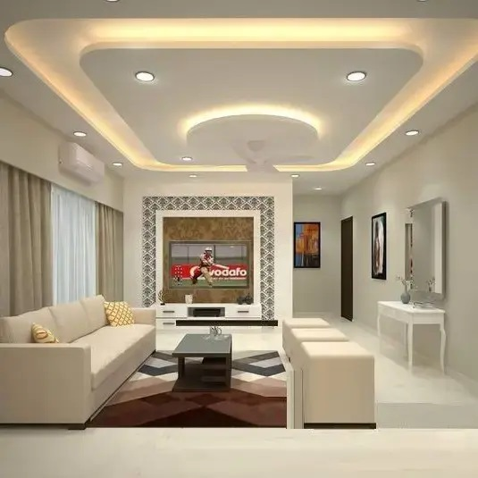
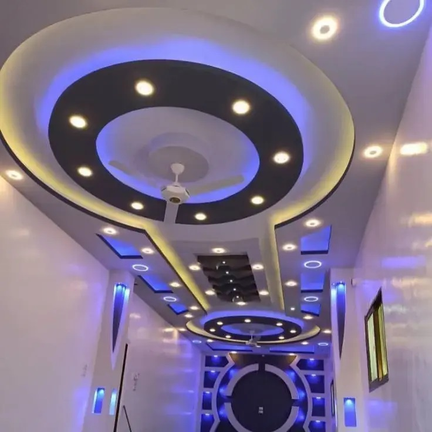
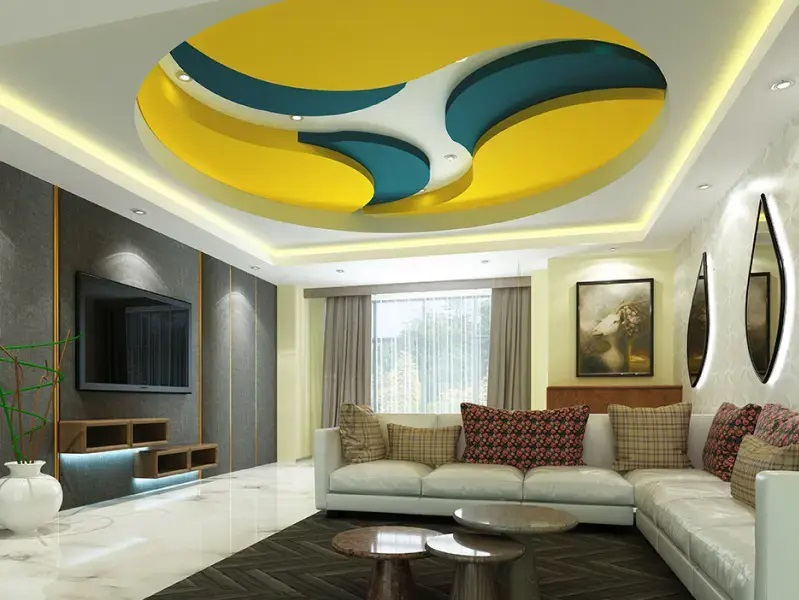

At RS Ranjeet Sharma, we execute POP and false ceiling work with a strong focus on structural accuracy, level finishing, and long-term stability. All ceiling work is carried out on site with proper framework alignment and secure fixing. We follow approved drawings strictly without unnecessary design modifications. Material selection is done based on ceiling height, lighting requirements, and site conditions. Joint finishing and surface smoothness are carefully monitored. Proper spacing is maintained for lighting fixtures and service access. Our execution ensures crack resistance and clean edges. Each stage of work is supervised on site. The final result delivers a neat, durable, and well-finished ceiling system.

Precision-executed ceiling work with clean finishing, accurate levels, and durable structure.


This residential ceiling project was executed with proper metal framework and accurate leveling. Lighting cut-outs and service points were planned during the initial stage.
Joint finishing and surface smoothness were maintained to achieve a clean final appearance. The work was completed within schedule without compromising quality.
False ceilings help conceal wiring, ducting, and services neatly. They improve lighting placement and distribution. Ceiling levels can be adjusted for better proportions. POP ceilings provide smooth and uniform surfaces. Maintenance access becomes easier. Sound and heat insulation can be improved. Crack-resistant execution ensures durability. Clean edges enhance the overall interior finish. False ceilings add long-term functional value to interiors.




This commercial ceiling project required precise coordination with electrical and HVAC services. The framework was installed with strict alignment checks.
POP finishing was executed with attention to joints and edge detailing. The final installation delivered a clean and professional ceiling finish suitable for commercial use.